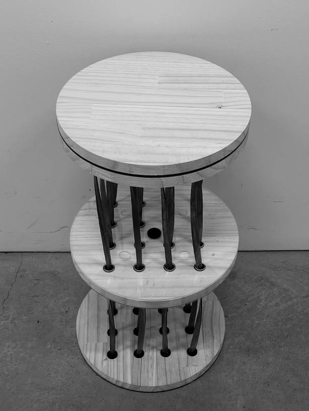
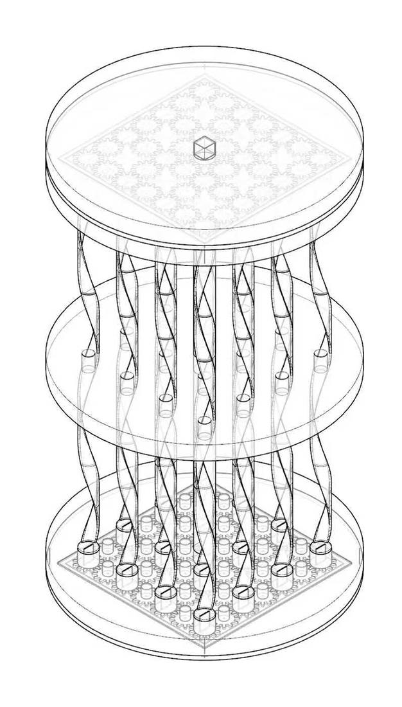
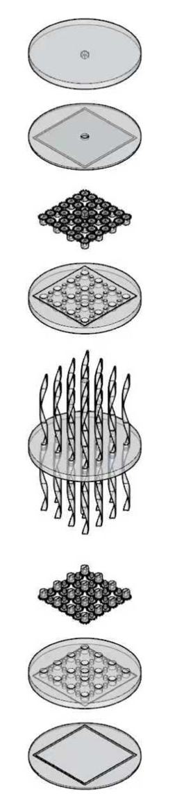
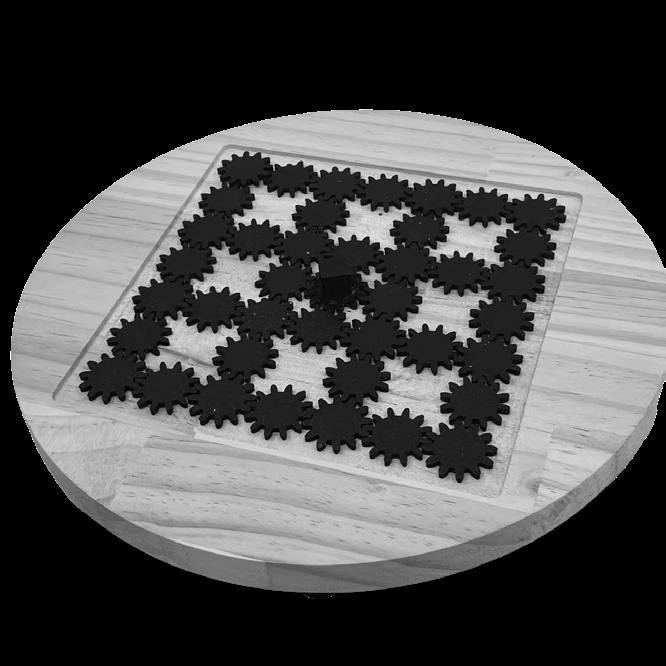
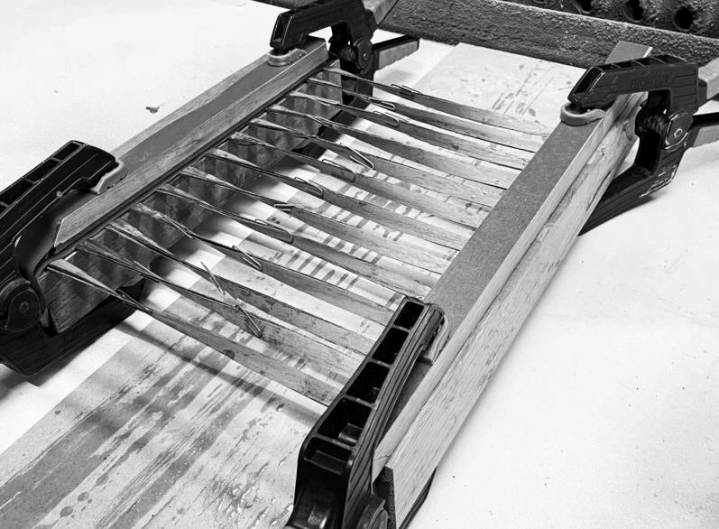
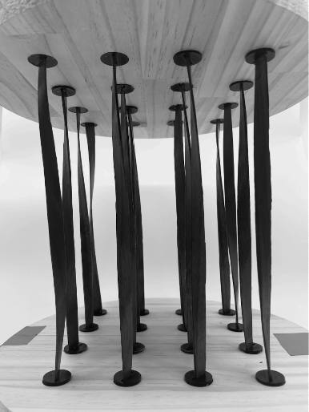
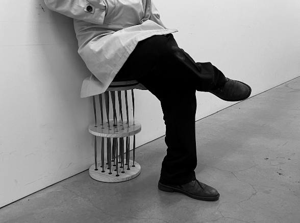

Project 09 — Handmade Swivel Chair
Handmade
Swivel Chair
Cantilevered swivel chair — gear-driven rotation

Cantilevered
swivel chair
This project explores a cantilevered swivel chair driven by a gear-based rotation mechanism, realised through the combined use of bent veneer lamination and digital fabrication. Veneer is not treated as a surface finish but as a structural material that actively participates in load-bearing and motion control.

The chair — full structure



